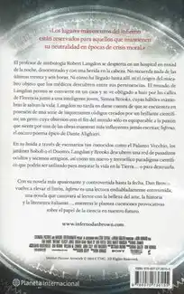

Inferno

Sipnosis
Los lugares más oscuros del infierno están reservados para aquellos que mantienen su neutralidad en épocas de crisis moral.
El profesor de simbología Robert Langdon se despierta en un hospital en mitad de la noche, desorientado y con una herida en la cabeza. No recuerda nada de las últimas treinta y seis horas. Ni cómo ha llegado hasta allí, ni el origen del macabro objeto que los médicos descubren entre sus pertenencias. El mundo de Langdon pronto se convierte en un caos y se ve obligado a huir por las calles de Florencia junto a una inteligente joven, Sienna Brooks, cuyas hábiles maniobras le salvan la vida. Langdon no tarda en darse cuenta de que se encuentra en posesión de una serie de inquietantes códigos creados por un brillante científico; un genio cuya obsesión con el fin del mundo sólo es equiparable a la pasión que siente por una de las obras maestras más influyentes jamás escritas: Inferno, el oscuro poema épico de Dante Alighieri.
En su huida a través de escenarios tan conocidos como el Palazzo Vecchio, los jardines Boboli o el Duomo, Langdon y Brooks descubren una red de pasadizos ocultos y secretos antiguos, así como un nuevo y terrorífico paradigma científico que podría ser utilizado para mejorar la vida en la Tierra... o para destruirla.
Apasionante y controvertida, Inferno es una lectura endiabladamente entretenida; una novela que cautivará al lector con la belleza del arte, la historia y la literatura italianas…, mientras le plantea cuestiones provocativas sobre el papel de la ciencia en nuestro futuro.
Editorial: Booket
Temática: Novela contemporánea, General Novela
Idioma: Español
Traductor: Aleix Montoto Llagostera
Número de páginas: 640
Fecha: Dom, 04/10/2020 - 12:00
Precio: 10.95€
Referencia (ISBN): 9788408222040
Volver
Autor: Dan Brown

Daniel «Dan» Brown es un escritor estadounidense conocido por la novela El código Da Vinci (2003) y otros títulos protagonizados por el personaje Robert Langdon.
Dan Brown ha vendido más de 234 millones de ejemplares de su obra en todo el mundo y sus libros han sido traducidos a 56 idiomas. Es el autor de grandes best sellers internacionales como El código Da Vinci, que a día de hoy sigue siendo el libro más vendido en español con más de ocho millones de ejemplares, Origen, Inferno, El símbolo perdido, Ángeles y demonios, La conspiración y Fortaleza digital.